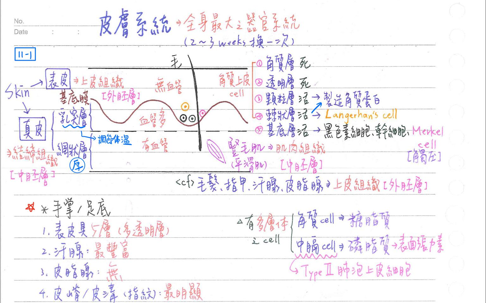
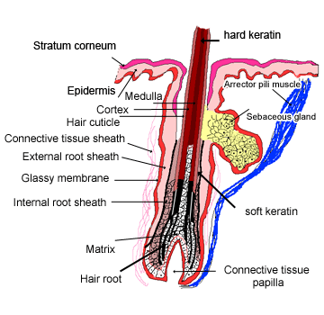
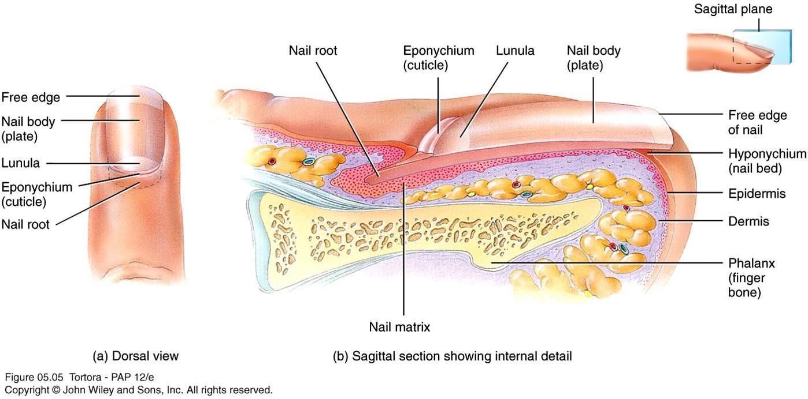

☀️ 皮膚系統
皮膚系統(integumentary system)概論
皮膚系統-構造
- 皮膚(skin)：表皮(epidermis)、真皮(dermis)
- 附屬構造：
- 毛髮(hair)
- 指甲(nail)
- 汗腺(sweat gland)
- 皮脂腺(sebaceous gland)
- 豎毛肌(arrector pili muscle)
- 表皮屬上皮組織 ⇒ 外胚層；真皮屬結締組織 ⇒ 中胚層
- 表皮&真皮之間具基底膜(basal lamina)
- 毛髮、指甲、汗腺、皮脂腺：均源自表皮之上皮組織(外胚層)
- 豎毛肌：平滑肌；屬肌肉組織(中胚層)
皮膚系統-功能：皮膚為全身最大器官系統(約佔體重15%)
- 保護(protection)：物理屏障；防止環境中生物性(如細菌)、化學性(如酸、鹼)、物理性(如紫外線)等傷害
- 恆定(homeostasis)：
- 調節體溫，防止水份蒸散→幫助維持體溫、水份之恆定
- 真皮乳突區：含豐富之微血管網；皮下組織層：具動靜脈分流(A-V shunt)
→有調節體溫之功能
- 散熱方式：
- 輻射(radiation)：60%
- 蒸發(evaporation)：25%
- 傳導/對流(conduction/convection)：15%
- 分泌(secretion)：
- 產生 VitD：幫助Ca之吸收
- 皮膚含7-去氫膽固醇(7-dehydrocholester)，經紫外線(UV)照射生成VitD3
→再經肝、腎共加2個羥基(OH)成1,25-(OH)2-D3
- 1,25-(OH)2-D3 = 活性D3(active D3) = 鈣三醇(calcitriol)
- 感覺(sensation)：含多種感覺接受器(指尖最豐富)，接受外界刺激
- 排泄(excretion)：經汗腺排除水(450cc/天)、鹽類(Na、Cl)及少量含氮廢物(尿素、尿酸、氨)
皮膚(skin)
皮膚-大體解剖=表皮+真皮 [重點；記分層]
- 表皮(epidermis)：4 or 5層
- 角質層(stratum corneum)：約25層鱗狀上皮
- 無核之死角質細胞(充滿角質蛋白[keratin])；呈嗜酸性
- 透明層(stratum lucidum)：約3~5層透明鱗狀上皮；只有手、腳掌有
- 無核之死角質細胞(充滿角質蛋白[keratin])；呈嗜酸性
- 顆粒層(stratum granulosum)：約2〜5層鱗狀上皮
- 有核之活角質細胞，細胞在此層開始死亡
- ★[109-1]神經末梢最遠終止於此層
- 棘狀層(stratum spinosum)：約8〜10層多邊形細胞
- 有核之活角質細胞，含豐富細胞質突起(棘)
- 具蘭格漢氏細胞(Langerhans cell)
- 基底層(stratum basale)：單層柱狀細胞
- 幹細胞(stem cell)，可分裂出角質細胞(Keratinocyte)
→又稱生長層(stratum germinativum)
- 具Markel's cell(觸壓覺)
- 幹細胞(stem cell)，可分裂出角質細胞(Keratinocyte)
- skin：每2-3周替換一次
- 角質層(stratum corneum)：約25層鱗狀上皮
- 真皮(dermis)：
- 乳突層(papillary layer)：
- 含豐富微血管網，供應其上無血管之表皮
- 含麥氏(Meissner)小體[輕觸覺]
- 網狀區(reticular layer)：
- 較厚；富含膠原纖維及彈性纖維
- 大部份感覺接受器、汗腺、皮脂腺、豎毛肌均位於此層
- 姙娠紋(striae)：
- 原因：皮膚快速牽引(rapid stretch)，使真皮層內膜膠原纖維受損所造成
- 常見於懷孕、Cushing syndrome、急劇增胖等
- 乳突層(papillary layer)：
皮膚-一般性質
- 表面積：約1.7 M2
- 厚度：約0.3mm(眼瞼上皮最薄)〜5mm(背部最厚)
→主要原因：網狀層厚度不同
- 表皮一般為4層，但手掌及足底為5層(多了透明層)
- 角質細胞(keratinocyte)=表皮最主要之細胞
→淺部棘狀層&顆粒層之角質細胞可製造：- 角質透明顆粒(keratohyalin granule)：嗜鹼性、無包膜
- 角質蛋白(keratin)：蛋白質+中間絲[=張力絲(tonofilament)]；負責將細胞角化(keratinization)
- 表皮之角蛋白：為軟性角蛋白(soft keratin)
- [重點]層狀體(lamellar bodies)=層狀顆粒(lamellar granule)：具包膜
- 含糖脂質(glycolipid)，經胞泄作用分泌至細胞外
→提供細胞間黏結(intercellular cement)、皮膚防水(water barrier)之功能
- 含糖脂質(glycolipid)，經胞泄作用分泌至細胞外
- 角質透明顆粒(keratohyalin granule)：嗜鹼性、無包膜
- 表皮與真皮之密合，仰賴：
- 表皮嵴(epidermal ridges= rete pegs)：與真皮乳頭(dermal papillae)彼此交錯榫接
- 表皮基底層細胞：藉半胞橋小體(hemidesmosome) ⇒ 錨接於基底膜(basal lamina)

皮膚-特殊細胞
- 黑色素細胞(melanocyte)：
- 位於表皮之基底層，可製造黑色素(melanin)
- 黑色素由酪胺酸(tyrosine)衍生而來，可分真性黑色素(eumelanin；黑色、棕色)&假性黑色素(pheomelanin；紅、藍、綠色)
- 各色人種所含黑色素細胞數量差不多，但其產生黑色素的種類及數目差異極大
- 陽光中紫外線可使黑色素細胞內酵素活性增加 ⇒ 使皮膚變黑
- 蘭格漢氏細胞(Langerhans cell)
- 位於表皮之棘狀層
- 源自骨髓之樹突細胞(dendritic cell) = 組織球(histiocyte) ≒ 巨噬細胞
- 具吞噬作用、呈現抗原等功能
- [重點]牟克氏細胞(Merkel cell)
- 位於表皮之基底層
- 神經末稍終盤(terminal disc)=牟克氏小體(Merkel's corpuscle)：為觸壓覺接受器，不具包膜
- 於手指尖最豐富
皮膚-決定膚色的因素
- 黑色素(melanin)：種類(顏色)&數量(濃淡) ⇒最重要的因素
- 胡蘿蔔素(carotene)：黃
- 血红素(hemoglobin)：真皮及皮下血管血流量 ⇒ 紅
- 膽紅素(bilirubin)：當黃疸時才會有
[重點]皮膚-分裂(cleavage)線=張力(tension)線=蘭氏線(Langer’s line)
- 膠原纖維&彈性纖維排列方向大致與此線平行
- 若手術皮膚劃開方向與此線平行，則傷口癒合較佳；但若垂直⇒癒合較差
皮膚-皮嵴(skin ridge)、皮溝(skin groove)
- 皮嵴：由真皮乳頭(dermal papilla)造成之隆凸
- 皮溝：皮嵴之間的凹槽
- 尤以手掌(指紋)、足底(趾紋)最明顯
- 其型式由基因決定，因人而異；隨年龄增長而加深
- 指紋可助於人身鑑識
- 主要功能：增加摩擦力 ⇒ 以利抓舉、走路等
皮膚-燒傷(burn)
- 一度：僅及表皮；紅腫
- 二度：表皮+部份真皮；起水泡
- 三度：表皮+全部真皮；乾白
毛髮(hair)
皮膚-毛髮之構造
- 髮幹(shaft；外露部份)：死細胞
- 髮根(root；隱於皮內)：死細胞
- 髮幹與髮根之基本構造：
- 外層：皮殼(cuticle) ⇒ 單層角化細胞(含軟性角蛋白)
- 中層：皮質(cortex) ⇒ 最多層角化細胞(含硬性角蛋白)
- 內層：髓質(medulla)一2~3層角化細胞
- 毛球(bulb)：活細胞
- 基質(matrix)：具分裂生長能力
- 毛球基質含黑色素細胞，其產生黑色素的種類及數目 ⇒ 決定髮色
- 毛乳頭(papilla)：富含血管
- 基質(matrix)：具分裂生長能力
皮膚-毛囊(hair follicle)
- 外層：真皮鞘(dermal sheath)=結締組織鞘(conective tissue sheath)
- 內層：表皮鞘(epithelial sheath)
- 外根鞘(external root sheath)：含表皮構造(尤其生長層)
→扮演表皮受損後再生癒合之能力
- 內根鞘(internal root sheath)：固定髮根
- 毛囊表皮鞘與真皮鞘(結締組織鞘)之分界：玻璃膜(glassy membrane)=基底膜之加厚(不具細胞)
- 外根鞘(external root sheath)：含表皮構造(尤其生長層)

皮膚-與毛髮有關構造
- 大部份皮脂腺(外根鞘延伸而出)：@真皮層
- 豎毛肌：由真皮乳突層→毛囊真皮鞘(結締組織鞘)之平滑肌(源自中胚層)
→其收缩造成毛髮豎立、雞皮疙瘩(gooseflesh)
- 頂漿型汗腺
- 毛髮生長速度：約0.3mm/天
指甲(nail)
指甲-構造
- 指甲(nail)：死細胞；由角質化細胞構成,含硬性角蛋白
- 甲體(body)：裸露處
- 甲根(root)：皮膚覆蓋處
- 甲床(nail bed)：活細胞
- 由表皮生長層(germinal layer)構成
- 近端基質(matrix)：負責指甲生長
- 指甲生長速度：約0.5〜1.2mm/天 (手>腳)

皮膚腺體(gland)
皮脂腺(sebaceous gland)：分泌皮脂(sebum)
- 位置：★★真皮層
- 型式：全泌型(holocrine)、
複式(compound)、泡型(alveolar)
- 分類：
- 與毛囊有關：大部份；經毛髮孔至皮膚表面
→★[110-1]手掌、足底無皮脂腺
- 與毛囊無關：僅少數；獨立開口於皮膚表面
→例如：唇、乳暈(Montgomery gland)、龜頭、眼瞼(Meibomian gland)
- 與毛囊有關：大部份；經毛髮孔至皮膚表面
汗腺(sweatgland)：分2型
- 排出型(eccrine, merocrine)：
- 實例：大部份汗腺屬此類(尤其手掌、足底特多)
- 型式：單式管型(simple tubular)，具扭曲(coiled)
- 導管：獨立開口於皮膚表面
- 神經支配：交感N (末稍釋出Ach，而非NE)
- 分泌單位(secretory part)含三種細胞：
- 明(clear)細胞：無分泌顆粒，富含粒線體 ⇒ 分泌水&電解質
- 暗(dark)細胞：具分泌顆粒，富含rER，臨管腔 ⇒ 分泌醣蛋白
- 肌上皮細胞(myoepithelim)：富含肌動蛋白絲 ⇒ 收縮以排汗
- 汗液成份：近似腎小體之濾液
- 頂漿型(apocrine)：
- 實例：如腋下、生殖器(陰囊、大陰唇)、乳暈、肛圍之汗腺
- 型式：複式管腺型；具扭曲(coiled)
- 導管：開口於毛髮孔
- 神經支配：交感N(末稍釋出NE)
- 頂漿型汗腺特化：耵聹腺(外耳道)、Moll氏腺(上眼瞼)、乳腺
皮膚老化(skin aging)
- 原因：內因性(intrinsic；年齡)、環境性(photoaging；照光)
- 組織學變化：
- 表皮&真皮萎縮(atrophy)
- 表皮真皮交接處扁平化(flattened dermal-epidermal junction)
- 細胞數量↓：黑色素細胞(melanocyte)、蘭格漢氏細胞(Langerhans cell)、纖維母細胞(fibroblast)、肥大細胞(mast cell)
- 彈性纖維(elastic fiber)：位於真皮乳突層 ↓、位於真皮網狀區 ↑ or ↓
- 膠原纖維(collagen fiber) ↓
- 微血管網(尤其真皮乳突層) ↓、微血管擴張 ↑
- 皮膚神經感覺 ↓、皮膚表面pH ↑
- 毛髮數目 & 生長 ↓、指甲生長 ↓、腺體活性 ↓